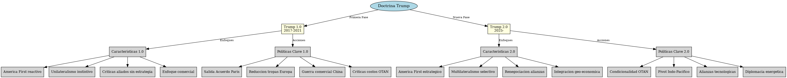
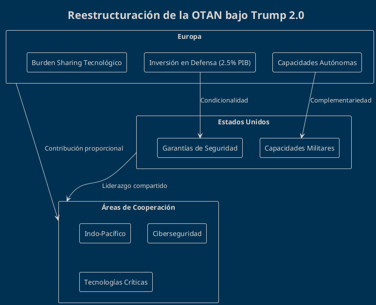
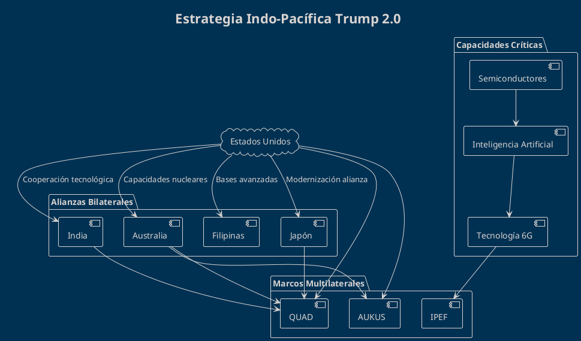
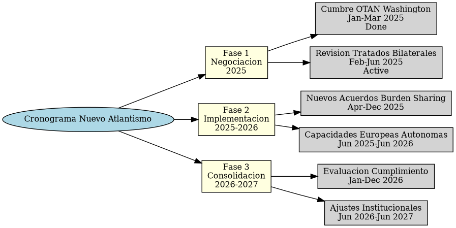
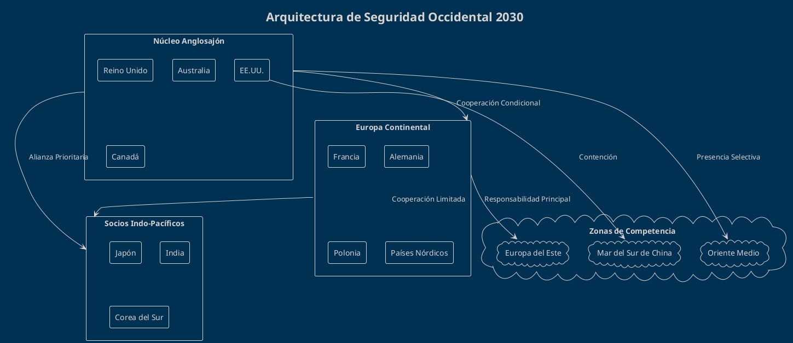

La Doctrina Trump 2.0: El Nuevo Realismo Americano y la Reconfiguración del Orden Transatlántico
La Doctrina Trump 2.0: El Nuevo Realismo Americano y la Reconfiguración del Orden Transatlántico
Introducción: El Retorno del Disrutor Geopolítico
La segunda administración Trump marca un punto de inflexión en la política exterior estadounidense que trasciende la mera continuidad de su primer mandato. Estamos ante una Doctrina Trump 2.0 que combina el pragmatismo transaccional característico del magnate neoyorquino con una visión estratégica más refinada del orden mundial multipolar emergente.
Esta nueva fase se caracteriza por una recalibración fundamental de las prioridades estratégicas americanas, donde el atlantismo tradicional cede espacio a un realismo geopolítico que prioriza la competencia con China y redefine las alianzas occidentales bajo criterios estrictamente utilitaristas.
Marco Teórico: Del Idealismo Liberal al Realismo Ofensivo
El Paradigma Mearsheimer en la Casa Blanca
La administración Trump 2.0 parece haber internalizado los postulados del realismo ofensivo de John Mearsheimer, particularmente su tesis sobre la inevitabilidad de la competencia entre grandes potencias. Este enfoque se manifiesta en:
- Priorización de la balanza de poder sobre la promoción democrática
- Enfoque transaccional en las alianzas multilaterales
- Reconocimiento explícito del carácter multipolar del sistema internacional
La Geopolítica del Heartland Revisitada
Trump 2.0 también incorpora elementos de la geopolítica clásica, especialmente la preocupación por el control del "Heartland" euroasiático. Sin embargo, a diferencia de Mackinder, la nueva doctrina estadounidense no busca impedir toda forma de integración euroasiática, sino asegurar que esta no desafíe la supremacía naval y tecnológica americana.
Análisis Comparativo: Trump 1.0 vs 2.0

{kind=link}
| Dimensión | Trump 1.0 | Trump 2.0 |
|---|---|---|
| Enfoque hacia China | Guerra comercial | Competencia sistémica integral |
| Relación con Europa | Crítica destructiva | Condicionalidad constructiva |
| Política de alianzas | Unilateralismo | Multilateralismo selectivo |
| Visión del orden mundial | Nostálgica (años 50-60) | Realista (mundo multipolar) |
| Herramientas diplomáticas | Sanciones y aranceles | Arquitecturas de seguridad |
| Relación con Rusia | Ambivalente | Competencia pragmática |
El Nuevo Atlantismo: Condicionalidad y Reciprocidad
La Reconfiguración de la OTAN
La Doctrina Trump 2.0 no busca la destrucción de la OTAN, sino su transformación en una alianza más equilibrada donde los costos y beneficios se distribuyan de manera más equitativa. Esto implica:
Condiciones Específicas para el Compromiso Americano

El Principio de Reciprocidad Estratégica
| Contribución Europea | Contrapartida Americana | Mecanismo de Verificación |
|---|---|---|
| 2.5% PIB en defensa | Garantías Artículo 5 | Auditorías OTAN trimestrales |
| Capacidades autónomas Europa | Inteligencia estratégica | Ejercicios de interoperabilidad |
| Apoyo en Indo-Pacífico | Protección tecnológica | Misiones conjuntas |
| Diversificación energética | Garantías de suministro | Acuerdos bilaterales |
La Dimensión Indo-Pacífica: El Nuevo Centro de Gravedad
Arquitectura de Seguridad Multidimensional
La Doctrina Trump 2.0 reconoce que el futuro del orden mundial se decidirá en el Indo-Pacífico. Por ello, desarrolla una estrategia integral que combina:

Inversión en Capacidades Críticas
| Sector Tecnológico | Inversión Proyectada (2025-2030) | Socios Clave | Objetivo Estratégico |
|---|---|---|---|
| Semiconductores | $280 mil millones | Taiwán, Japón, Corea del Sur | Independencia tecnológica |
| Inteligencia Artificial | $150 mil millones | Reino Unido, Israel, Canadá | Superioridad militar |
| Tecnologías Cuánticas | $95 mil millones | Australia, Países Bajos | Ventaja computacional |
| Energías Renovables | $200 mil millones | Dinamarca, Noruega | Seguridad energética |
Impacto en las Relaciones Transatlánticas
Redefinición del Contrato Atlántico
La Doctrina Trump 2.0 implica una redefinición fundamental del contrato transatlántico establecido en 1949. Los elementos clave de esta transformación incluyen:
Nuevo Equilibrio de Cargas y Responsabilidades

Escenarios de Evolución de las Relaciones UE-EE.UU.
| Escenario | Probabilidad | Características Clave | Implicaciones para Europa |
|---|---|---|---|
| Cooperación Pragmática | 45% | Acuerdos sectoriales, burden sharing equilibrado | Autonomía estratégica gradual |
| Distanciamiento Controlado | 35% | Reducción compromisos, mantiene marcos básicos | Aceleración capacidades propias |
| Ruptura Selectiva | 15% | Retirada parcial, alianzas bilaterales priorizadas | Reconfiguración arquitectura seguridad |
| Confrontación Abierta | 5% | Crisis institucional, competencia directa | Realineamiento geopolítico total |
Proyecciones para la Arquitectura de Seguridad Occidental
El Nuevo Mapa Geopolítico 2025-2030
La implementación de la Doctrina Trump 2.0 tendrá consecuencias duraderas en la configuración del orden mundial. Las proyecciones más probables incluyen:

Indicadores de Éxito y Fracaso
Métricas de Implementación Exitosa
| Indicador | Meta 2027 | Método de Medición |
|---|---|---|
| Gasto militar europeo (% PIB) | >2.5% | Informes OTAN |
| Capacidades autónomas europeas | 70% objetivos | Evaluaciones PESCO |
| Interoperabilidad Indo-Pacífico | 85% sistemas | Ejercicios militares conjuntos |
| Diversificación energética | <30% dependencia rusa | Datos Eurostat |
Señales de Alerta de Fracaso
- Incumplimiento sistemático de compromisos de gasto en defensa
- Escalada de tensiones comerciales transatlánticas
- Fragmentación de la respuesta occidental ante crisis
- Realineamientos geopolíticos de socios clave hacia China/Rusia
Conclusiones: Hacia un Nuevo Orden Westfaliano
La Doctrina Trump 2.0 representa más que una política exterior; constituye una reconceptualización fundamental de la posición estadounidense en el orden mundial del siglo XXI. Su implementación exitosa requiere:
- Recalibración de Expectativas: Europa debe aceptar el fin del protectorado estratégico americano y desarrollar capacidades autónomas reales.
- Nuevo Consenso Transatlántico: La supervivencia del vínculo atlántico depende de su transformación en una alianza de iguales, no de dependientes.
- Adaptación Institucional: Las instituciones occidentales deben evolucionar para reflejar la nueva distribución de poder y responsabilidades.
- Realismo Estratégico: Tanto Washington como Bruselas deben abandonar las ilusiones idealistas y abrazar una diplomacia basada en intereses concretos.
El éxito de esta transición determinará si Occidente emerge fortalecido de la crisis del orden liberal o si asistimos a su fragmentación definitiva ante el ascenso de potencias revisionistas. La Doctrina Trump 2.0 plantea una apuesta arriesgada pero necesaria: la supervivencia a través de la transformación.
Referencias
Fuentes Primarias
- National Security Strategy 2025, White House
- NATO Strategic Concept 2024, Brussels
- Congressional Budget Office, Defense Spending Projections 2025-2030
Literatura Académica
- Mearsheimer, John J. (2001). The Tragedy of Great Power Politics. University of Chicago Press
- Walt, Stephen M. (2018). The Hell of Good Intentions. Farrar, Straus and Giroux
- Brands, Hal (2022). The Twilight Struggle. Yale University Press
Análisis Especializado
- RAND Corporation (2024). "European Strategic Autonomy: Capabilities and Constraints"
- Center for Strategic and International Studies (2024). "Indo-Pacific Strategy: Beyond Containment"
- International Institute for Strategic Studies (2024). "The Military Balance 2024"
Fuentes de Datos
- Stockholm International Peace Research Institute (SIPRI) Military Expenditure Database
- NATO Defence Expenditure Data
- U.S. Department of Defense Budget Materials
—
Este análisis refleja las tendencias observables al inicio de la segunda administración Trump. La evolución de la situación geopolítica requerirá actualizaciones constantes de estas proyecciones.